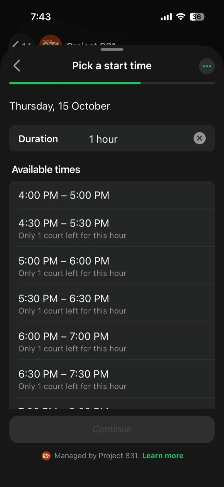
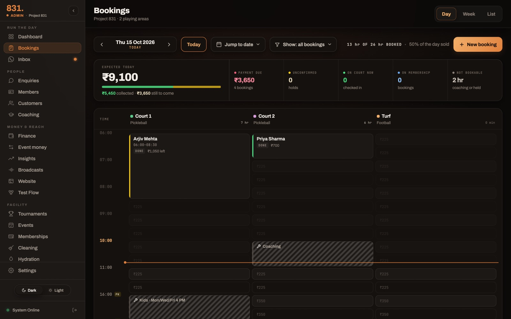
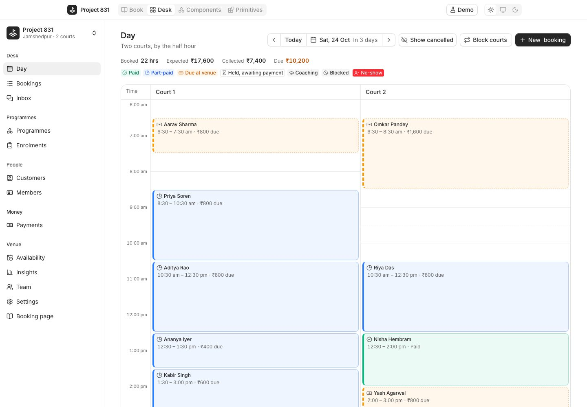
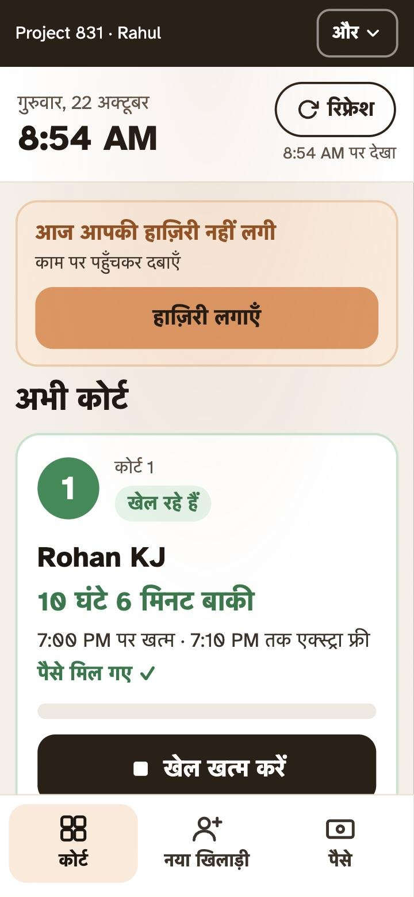
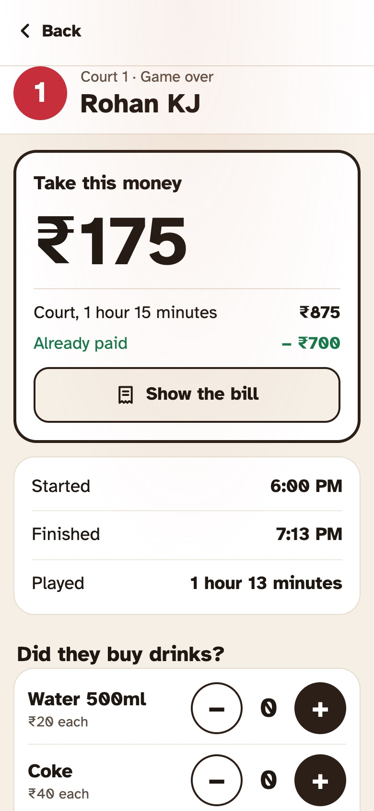

Project 831
The software my sports venue runs on: customers book, pay and renew inside WhatsApp with no app to download, and one caretaker runs the desk.
Project 831 is a two-court pickleball venue in Jamshedpur, in eastern India, that I co-founded and run alongside my design job. People book a court by WhatsApp, on the website or at the desk, and parents enrol their children in a weekend fitness club. I designed and built everything it runs on.
Court bookings made with no one on the phone
15%→74%
69% of people who open the WhatsApp booking flow go on to book. ₹5.6 lakh, about $6,700, has gone through the system since May.


Why I built it
In the first months, a booking was a conversation. Somebody called or messaged the venue's number, and a person checked a paper sheet, quoted a price from memory, held a slot and remembered to collect.
That works at ten bookings a week and collapses at fifty.
Worst in the evening, when the person holding the phone is also the person running the desk.
In May, 72 of the 85 court bookings came in that way. At about ten minutes of calls and messages each, that was around 12 hours a month on bookings alone, plus "did anyone pay cash today?" most days, and my father driving over to collect it. It meant keeping staff on the phone, and that came straight out of revenue: the venue costs ₹62,000 a month just to open its doors.
So the goal was simple: the venue should take its own bookings, and one caretaker should be able to run the desk without doing sums.
Seven months, in five moments
- Work on the software startsBookings come by call and message, onto a paper sheet at the desk.
- 72 of 85 bookings needed a personAbout 12 hours a month on the phone; 15% booked themselves.
- 74% book themselves19 bookings in the month needed a person: about 3 hours.
- The site went down; nothing was deployedThe free database tier ran out of its disk budget.
- Staff Mode in HindiFor my dad at the desk, with attendance first.
1. Everything happens in WhatsApp
Nobody downloads an app to use the venue. A customer messages its WhatsApp number and does everything there. They book a court in a form inside the chat, pay the deposit by UPI without leaving it, get a reminder the evening before, cancel and keep the money as credit, check their membership hours, and ask about prices or directions in Hindi or English. Parents renew their child's club in two taps, and the invoice arrives by itself.
That was a deliberate choice. In Jamshedpur, people already message a business on WhatsApp, so instead of moving them to an app, I made the chat do the work. The website, the desk and a phone voice agent take bookings too, and all of them ask one place what is free, so they can never offer the same slot twice.
WhatsApp Cloud API and WhatsApp Flows for the forms inside the chat; Meta's payment cards, settled by Razorpay; and a template Meta approved for every message the venue starts: reminders, renewals, invoices.
The website, the desk, the bot and the voice agent all ask one availability module what is free, and it runs again on the server when a booking is written. A race for the last court comes back as a refusal, not a double booking.
A customer writes to the venue's WhatsApp number. No app, no account.
Free times for the day, some marked "1 court left". The court is picked for them.
Or pay at the venue.
A reminder follows the evening before. Cancelling keeps the money as credit.
Self-serve went from 15% of court bookings in May to 74% in September, and 69% of people who open the WhatsApp flow finish it. By September only 19 bookings in the month needed a person: about 3 hours of calls instead of twelve.
Try the booking bot yourself
Send TRY831 on WhatsApp. Same steps and prices as the real bot, on a made-up venue; it stops at payment, nothing is booked, and it ends after 30 minutes or when you send stop.
2. A desk one caretaker can run
There are two apps: a dashboard for the owner and the desk, and a much simpler phone app for whoever is at the counter, Staff Mode (below). The dashboard sees the day as a board: courts across, time down, every booking a block with a name and an amount. Adding a booking asks for a time, not a court, and picks the free court itself. Payment is three plain choices, not a dropdown.


Run the desk yourself
The same booking product rebuilt on Cal.com's coss ui, on fake data.
3. Staff Mode: the desk stops doing maths
The person at the desk works standing up, is often mid-conversation, and shouldn't need to be good at sums. A game that starts at 7:40 and is booked for 2 hours 20 minutes ends at 10:00. Nobody at the counter should have to work that out, or argue about the twelve minutes someone played past their hour.
So the staff app does it. Two taps, Start and Finish. The board shows when each game ends and when its free minutes run out. Overtime follows one published rule, ten minutes free and then fifteen-minute steps, and the screen says one number: "Take this money: ₹175." Since 21 October it opens in Hindi, for my dad at the desk, and asks for attendance before anything else.


For engineers one rule, two places
The rule lives in one module. The staff app runs it to show the amount before the desk taps Finish, and the server runs the same module when it records the game, so the screen and the bill can never disagree. A step that isn't a whole number of rupees rounds up to the next ₹10, so the desk is never asked for paise.
4. What broke, written the week it broke
A venue that runs on software finds every bug in front of a customer. Each failure gets a short write-up the week it happens: what went wrong, what it cost, and the rule that stops it happening again.
Read the learnings →Where the data said otherwise
- Per-minute billing was exact, and impossible to defend.
- We thought
- Charge every minute over: the fairest maths.
- We saw
- The worst conversation at the counter.
- So now
- Ten free minutes, then fifteen-minute steps, published on the bill.
- A reminder said ₹11,996. The real figure was ₹5,998.
- We thought
- Count the register rows.
- We saw
- One parent, two children, two paid months each. Caught in review before it went out.
- So now
- Every amount in a message is checked against the register first.
- "8.5:00 – 10.5:00 PM".
- We thought
- A duration divided by sixty is a time.
- We saw
- The maths was right, and the message read like a bug.
- So now
- Every length of time goes through one formatter: "8:30 – 10:30 PM (2 hours)".
- The site went down, and nothing had been deployed.
- We thought
- A deploy had broken the login.
- We saw
- The free database tier had run out of its disk budget, and the login screen blamed the user.
- So now
- Rule out capacity before blaming a deploy.
How it's built for engineers
- React 19 and a Vite PWA for the desk, the staff app and the dashboard; serverless functions on Vercel; Postgres underneath.
- WhatsApp Cloud API and WhatsApp Flows for forms inside the chat, Meta's payment cards settled by Razorpay, and templates approved by Meta for every message the venue starts: reminders, renewals, invoices.
- One availability module answers for the desk, the website, the bot and the voice agent, and runs again on the server when a booking is written, so a race for the last court comes back as a refusal, not a double booking.
- Dates that never slip a day. A date with no time, stored as midnight UTC and shown in a browser behind UTC, becomes the day before. Every date-only value is formatted in UTC.
- 1,698 commits in 208 days, 70% of them co-authored with Claude Code. I write the spec and review every diff.
Where it stands
Live since March and in daily use. Self-serve reached 74% of court bookings in September; October so far is 65%. Staff Mode has been in Hindi since 21 October, and the paper sheet runs alongside it for the first weeks so the two can be compared every night.